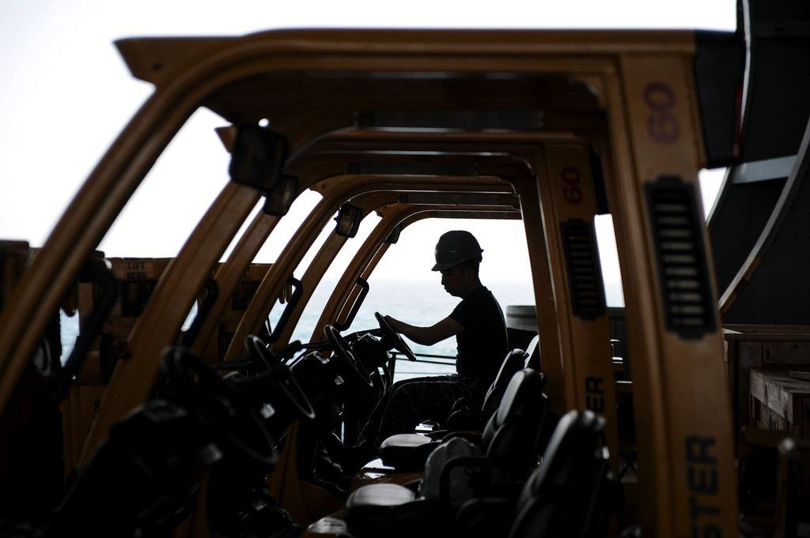
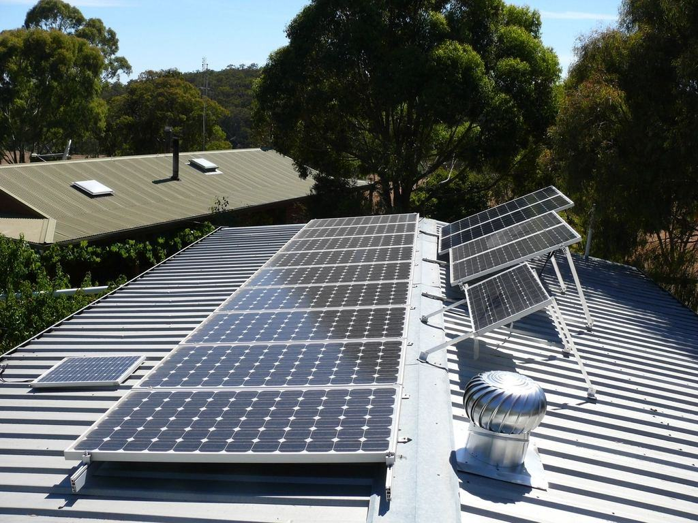
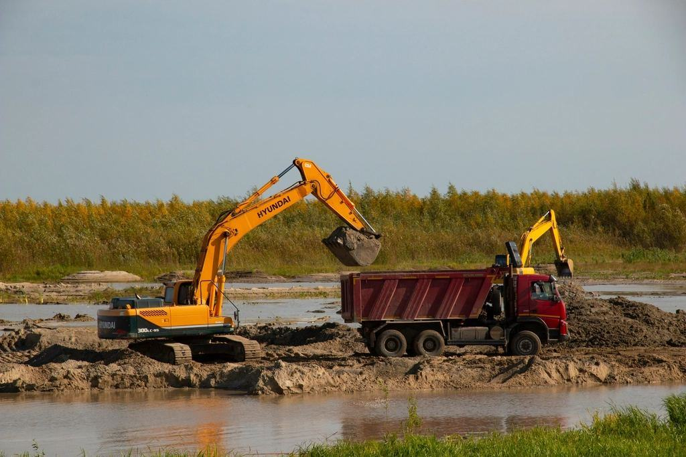
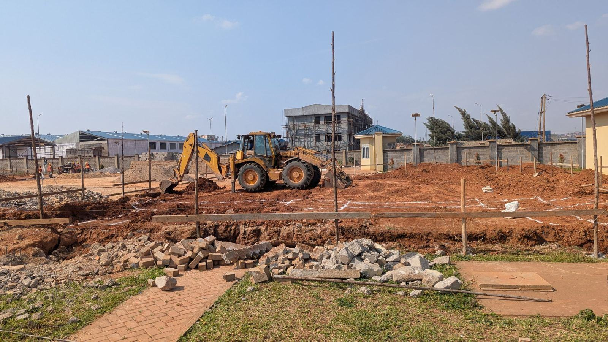

Tjänster
I dag är vi 21 anställda med 42 maskiner och depå på Kåpvägen i Skövde. Alla maskiner har 3D-styrning, och tre mätingenjörer gör om kundernas ritningar till maskinmodeller som laddas in innan leverans. Vi kalibrerar varje system mot SWEPOS nätverks-RTK och en egen kontrollpunkt på depån innan maskinen lämnar oss.
Hur exakt måste det bli?

Maskiner med kalibrerad 3D
Grävare, dozrar och hyvlar levereras med system som är kalibrerade för just den maskinen och den skopa du ska använda. Föraren ser i skärmen hur många centimeter som återstår till färdig nivå.
Maskinerna har dubbla antenner och lutningsgivare i bom, sticka och skopa.

Modeller av era ritningar
Tre mätingenjörer gör om bygghandlingar till terrängmodeller, linjer och ytor som maskinen kan läsa. Vi upptäcker ofta fel i ritningen innan första skopan har grävts.
En vanlig modell för en villatomt eller ett mindre parkeringsområde är klar på två arbetsdagar.

Solparker och planer
Solcellsparker, logistikplaner och idrottsplatser kräver jämna ytor över stora arealer. En dozer med 3D lägger en hektar bärlager inom två centimeters tolerans på en dag.
Vi mäter in färdig yta med drönare och lämnar en volymrapport till beställaren.

Ledningar och diken
VA-ledningar och dräneringar med svag lutning är det svåraste att få rätt med pinnar. Med 3D-modellen ligger ledningen på rätt fall från första röret.
Relationsmätningen görs medan grävaren arbetar och levereras i kommunens format.
Från ritning till relationshandling
- 1

Skicka ritningen
Vi tar emot DWG, IFC eller PDF och svarar med maskinförslag inom en arbetsdag.
- 2

Modellen byggs
Mätingenjören gör terrängmodell och linjer och stämmer av frågor med er projektör.
- 3

Kalibrerad leverans
Maskinen kontrolleras mot vår kontrollpunkt och levereras med modellen inladdad.
- 4

Inmätning och rapport
Vi mäter in färdig yta och lämnar relationshandling och volymer.
Kalibrerat och dokumenterat
- ISO 9001Kvalitetsledningssystem för uthyrning, modellering och mätning.
- Kalibrering mot SWEPOSAlla system kontrolleras mot Lantmäteriets nätverks-RTK och vår egen kontrollpunkt.
- MaskinförarbevisFörare och utbildare har maskinförarbevis och dokumenterad 3D-erfarenhet.
- Avtal och ID06 på platsKollektivavtal genom Byggnads och Unionen, ID06 för alla på arbetsplatsen.